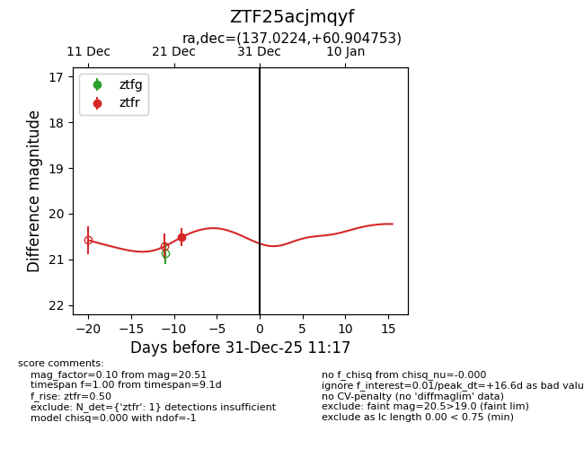
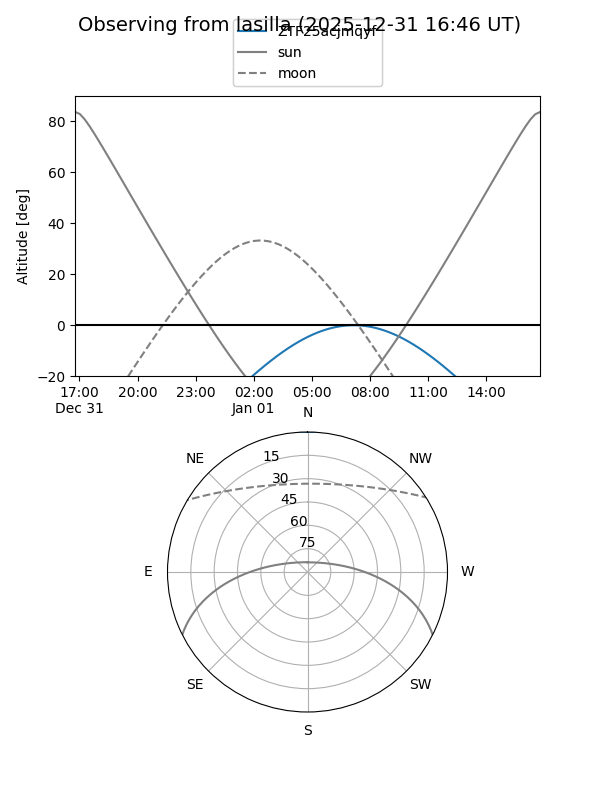
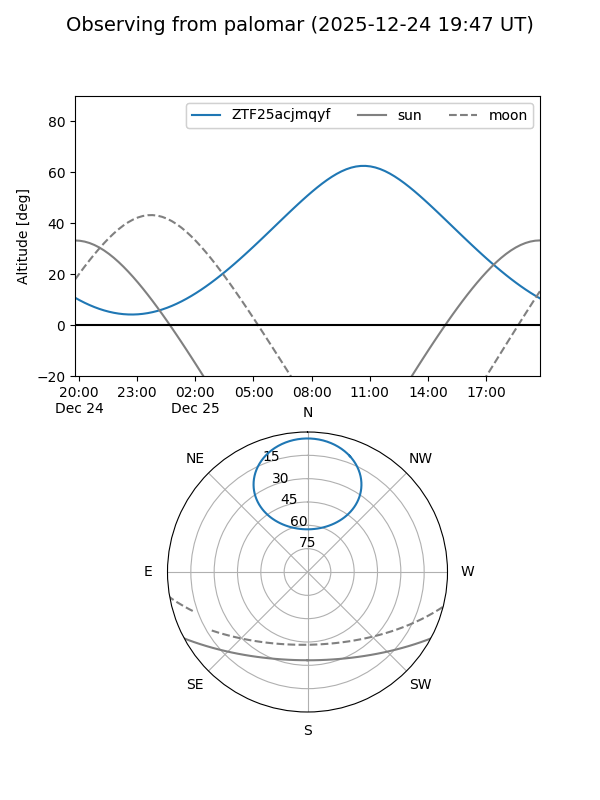

ZTF25acjmqyf
Target ZTF25acjmqyf at 2025-12-31 17:00
Aliases and brokers:
FINK:
Lasair:
ALeRCE:
alt names
ZTF25acjmqyf (ztf,fink_ztf)
Coordinates:
equatorial (ra, dec) = 137.0224,+60.90475
equatorial (HMS+DMS) = 09:08:05.37,+60:54:17.11
galactic (l, b) = (154.5651,+39.90110)
Flags:
Photometry:
last ztfr=20.51
1 ztfr detections
Lightcurve

Visibility


Additional plots